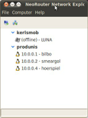

NeoRouter
Dieser Artikel wurde für die folgenden Ubuntu-Versionen getestet:
Ubuntu 16.04 Xenial Xerus
Zum Verständnis dieses Artikels sind folgende Seiten hilfreich:
NeoRouter  ist ein kostenloser sogenannter ZeroConf-VPN-Dienst, der für viele Plattformen (Linux, Mac OS X, Windows u.a.) verfügbar ist. Ein solches VPN-Netzwerk ermöglicht es, mit Freunden oder Kollegen eine Art virtuelles LAN über das Internet zu betreiben. So können alle Teilnehmer beispielsweise gegenseitig auf Samba-Freigaben, VNC-Verbindungen, Wake on LAN oder eigene Online-Spiele zugreifen.
ist ein kostenloser sogenannter ZeroConf-VPN-Dienst, der für viele Plattformen (Linux, Mac OS X, Windows u.a.) verfügbar ist. Ein solches VPN-Netzwerk ermöglicht es, mit Freunden oder Kollegen eine Art virtuelles LAN über das Internet zu betreiben. So können alle Teilnehmer beispielsweise gegenseitig auf Samba-Freigaben, VNC-Verbindungen, Wake on LAN oder eigene Online-Spiele zugreifen.
Ein ähnlicher Dienst ist Hamachi, wobei NeoRouter aber nach eigenen Aussagen mehr Funktionen bietet. Auf der offiziellen Homepage wird dies durch eine Feature-Matrix dargestellt, welche Hamachi mit NeoRouter vergleicht. Eine weitere Alternative ist RetroShare.
Achtung!
NeoRouter ist proprietär, der Quelltext ist demnach auch nicht freigegeben. Der Server des kanadischen Herstellers speichert alle notwendigen Daten, damit die Clients eines virtuellen Netzwerks über das Internet ihren jeweiligen Server finden.
Client¶
Der Client benötigt ein bereits vorhandenes NeoRouter-VPN, mit welchem er sich verbinden kann. Folgende Voraussetzungen müssen für eine Anmeldung erfüllt sein:
Die Adresse (Domain) muss bekannt sein
Man muss als normaler User "freigeschaltet" sein
Sollte noch kein NeoRouter-VPN vorhanden sein, muss zunächst der NeoRouter-Server aufgesetzt und ein solches VPN eingerichtet werden.
Installation des Clients¶
Zunächst lädt man sich die aktuelle Version des Clients als .deb-Paket von der Herstellerseite herunter und installiert sie manuell [1]. Das Client-Paket beinhaltet die beiden Programme nrservice und nrclientcmd. Ersteres stellt die grundsätzlichen Dienste für NeoRouter bereit und wird automatisch beim Start des PCs ausgeführt. Mittels nrclientcmd verbindet man sich dann zur VPN-Domain.
Hinweis!
Fremdpakete können das System gefährden.
Um nun dem VPN-Netzwerk beizutreten, wird der Befehl:
nrclientcmd -d domain -u user -p passwort
in einem Terminal [2] eingegeben. Angenommen, der Benutzer franz mit dem Passwort sissy möchte sich zur Domain Austria verbinden, so lautet der Aufruf
nrclientcmd -d Austria -u franz -p sissy
Sind alle Angaben richtig, erscheint folgende Meldung:
Available Commands: addcomputer, deletecomputer, createcategory, renamecategory, deletecategory, wakeonlan, setproxy, changepassword, quit Enter command:
Das bedeutet, dass die Verbindung zum Netz funktioniert. Mit Strg + C kann der Prozess nun abgebrochen werden. Die Verbindung bleibt dabei bestehen.
Mit Hilfe des Befehls
ifconfig nrtap
kann überprüft werden, ob die VPN-Verbindung richtig funktioniert. Die Ausgabe sieht in etwa so aus:
nrtap Link encap:Ethernet HWaddr 06:94:f4:06:d3:c8 inet addr:10.0.1.3 Bcast:10.0.1.255 Mask:255.255.255.0 inet6 addr: fe80::494:f4ff:fe06:d3c8/64 Scope:Link UP BROADCAST RUNNING MULTICAST MTU:1300 Metric:1 RX packets:15 errors:0 dropped:0 overruns:0 frame:0 TX packets:26 errors:0 dropped:0 overruns:0 carrier:0 collisions:0 txqueuelen:500 RX bytes:2594 (2.5 KB) TX bytes:4070 (4.0 KB)
Man erkennt, dass der Client mit dem virtuellen LAN über die IP-Adresse 10.0.1.3 verbunden ist.
GUI¶

Auf SourceForge wird das Projekt NRClientX gehostet, welches eine grafische Oberfläche zur Steuerung des Clients beinhaltet. Zur Verwendung der GUI ist allerdings wxPython-2.8 erforderlich:
python-wxgtk2.8 (universe)
 mit apturl
mit apturl
Paketliste zum Kopieren:
sudo apt-get install python-wxgtk2.8
sudo aptitude install python-wxgtk2.8
Jetzt kann man sich die aktuelle Version von NRClientX als Archivdatei  herunterladen und entpacken [3]. Anschließend wechselt man per Terminal in das entpackte Verzeichnis und startet die GUI mit:
herunterladen und entpacken [3]. Anschließend wechselt man per Terminal in das entpackte Verzeichnis und startet die GUI mit:
python PyNRClientX.py
Server¶
Installation des Servers¶
Hinweis:
Es ist erforderlich, dass der TCP-Port 32976 nicht durch eine Firewall blockiert wird, da sich sonst die Clients nicht verbinden können.
Zunächst lädt man sich die aktuelle Version des Servers als .deb-Paket von der http://www.neorouter.com/downloads herunter und installiert das Paket wie den Client manuell [2]. Das Paket beinhaltet das Programm nrserver, welches nach der Installation automatisch gestartet wird.
Hinweis!
Fremdpakete können das System gefährden.
Konfiguration des Servers¶
Es gibt eine extra Linux Version. Man kann den Server jedoch problemlos über ein Terminal konfigurieren. Siehe : http://www.neorouter.com/wiki/index.php/NeoRouterWiki:ServerSetup
Neue Domain anlegen¶
Eine neue Domain (das ist der Name des virtuellen LANs) kann online angelegt werden:
Create NeoRouter Domain . Man gibt einen Namen und ein Passwort für die Domain sowie die Kontaktdaten des Administrators an.
Jetzt wechselt man auf dem Server-PC in ein Terminal und überträgt mit Root-Rechten [4] die neuen Domaindaten. Angenommen, man hat die Domain foo mit dem Passwort bar angelegt, so lautet der Befehl:
sudo nrserver -setdomain foo bar
Als nächstes wird der Serverport festgelegt, welcher standardmäßig 32976 ist:
sudo nrserver -setport 32976
Das Subnet der Domain wird nun auf den Bereich 10.0.0.0 gelegt:
sudo nrserver -dhcp 10.0.0.0 255.255.255.0
Hierdurch erhalten die Teilnehmer eine IP-Adresse der Form 10.0.0.x. Die Einstellungen kann man sich nun nochmals anzeigen lassen per:
sudo nrserver -showsettings
Der Server ist nun soweit eingerichtet. Jetzt müssen noch die Teilnehmer angelegt und freigeschaltet werden.
Benutzer hinzufügen¶
Damit sich die Clients verbinden können, benötigt jeder Teilnehmer einen Benutzernamen auf dem NeoRouter-Server (nicht auf dem Linux-System!). Im Terminal verbindet man sich zum Server-PC und legt die Benutzer mit Root-Rechten an:
sudo nrserver -adduser BENUTZERNAME PASSWORD [admin|user]
Soll zum Beispiel der Benutzer hannes mit dem Passwort bierchen angelegt werden, lautet die Eingabe:
sudo nrserver -adduser hannes bierchen user
Anschließend muss der Benutzer noch aktiviert werden:
sudo nrserver -enableuser hannes
Ab jetzt kann Hannes sich mit seinem Client mit dem Netzwerk verbinden.
Eine Liste aller Befehle erhält man im Wiki des Herstellers oder durch Eingabe von
nrserver -help
Neue Domain mittels Windows erstellen¶
Die Installation mittels Wine schlägt derzeit fehl, so dass man an dieser Stelle auf einen Windows-PC im LAN bzw. eine Virtualisierung zurückgreifen muss. Man lädt also von der Herstellerseite zunächst den Windows-Client herunter und installiert ihn unter Windows. Nach der Installation startet man über "Start -> Programme -> NeoRouter -> NeoRouter Configuration Explorer" den NeoRouter Configuration Explorer und verbindet sich mit dem Server. Die IP-Adresse ist hierbei die IP des Servers im lokalen Netz, Benutzername und Passwort entsprechen dem Linux-Account auf dem Server. Im Konfigurationsfenster wechselt man in der linken Navigationsleiste zum Punkt "Settings".
Unter "Current Domain" wird nun der Name der neuen Domain eingetragen. Die Einstellungen bei Port, NAT und DHCP müssen nicht verändert werden. Anschließend klickt man links unten auf den Link "Create a new Domain". Hierdurch wird man auf die Webseite von NeoRouter geleitet, auf welcher man nun die neue Domain anlegen kann.
Ist dies geschehen, kann man sich nun im NeoRouter Configuration Explorer per "Setup Domain" über die neue Domain anmelden. Nun kann man die ersten Benutzer für die Domain freischalten.
- Erstellt mit Inyoka
-
 2004 – 2017 ubuntuusers.de • Einige Rechte vorbehalten
2004 – 2017 ubuntuusers.de • Einige Rechte vorbehalten
Lizenz • Kontakt • Datenschutz • Impressum • Serverstatus -
Serverhousing gespendet von